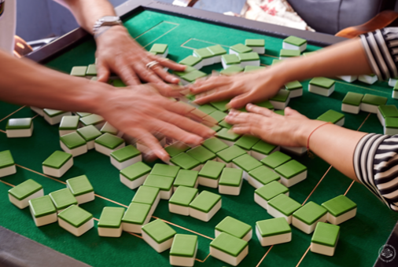
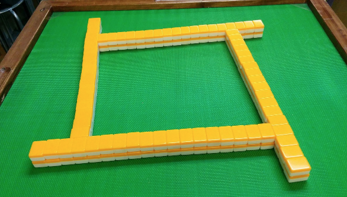
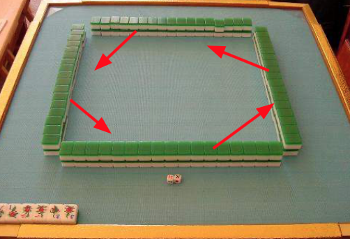
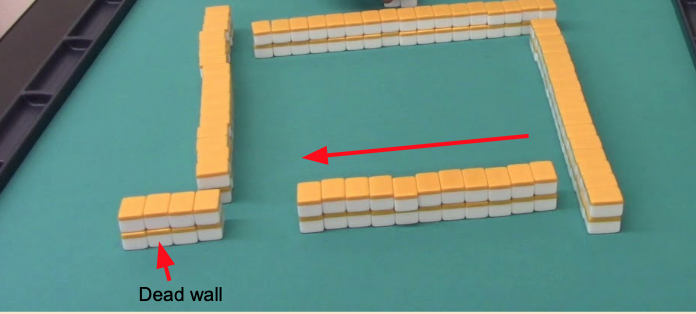
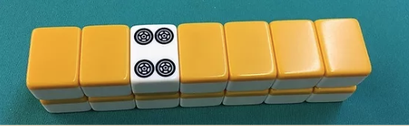
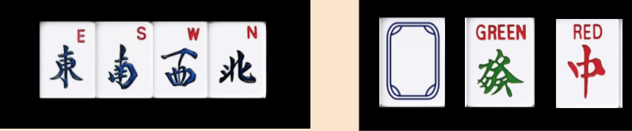
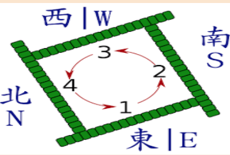

في هذا الدليل سوف أعلمك كيفية إعداد اللعبة
اعداد اللعبه:
اولاً اجمع قطع الاتجاهات، وضعها مقلوبًا وخلطها. ثم يختار كل لاعب قطعه لتحديد مكان جلوسهم. ثم قم برمي النرد لتحديد التاجر صاحب أكبر رقم
ثم ضع كل القطع مقلوبًا وخلطهم
اجعل ٤ جدران بعرض 17 قطعه وارتفاع قطعتان كما في الصوره (إجمالي 34 بلاطة)
الآن قم برمي النرد واحسب ذلك الرقم عكس اتجاه عقارب الساعة. والآن سيصبح الجدار الذي انتهيت به العد هو الحائط الميت
الحائط الميت هو حائط لا يسحب منه. لإنشاء الجدار الميت ، احسب نفس الرقم الذي حصلت عليه عندما رميت النرد بدءًا من الجانب الأيمن وقم بتقسيم الجدار. 
تذكر عندما قلنا أنه عند السرقة لإكمال رباعي ، يجب عليك سحب قطعه إضافية لموازنة قطعك، يجب سحب هذه القطعه الإضافي من الجدار الميت
الآن سيبدأ كل لاعب بدءًا من اللاعب الشرقي في جمع قطع اللعب من الجدران الأخرى. تبدأ من الحائط بعد الحائط الميت، وتقوم بتجميع ٤ قطع في كل مرة حتى يكون لكل لاعب ١٣ قطعة. ثم اختر واحدًا لجعله ١٣. (عند السحب يبدأ دائمًا بالقطعه العلوي ثم التي تحتها. والسحب دائماً في اتجاه عقارب الساعة)
الآن قبل البدء هناك شيء أخير. أيًا كان من يواجه الجدار الميت ، يحسب ثلاثة قطع من يسار الجدار الميت ويقلب القطعة الثالثة لأعلى. هذه القطعه تسمى الآن قطعة "الدوره". تذكر عندما ذكرنا أن كل طريقة للفوز تمنحك نقاطًا على شكل "هان" والتي يتم تحويلها إلى نقاط في النهاية. حسنًا ، إذا كان لديك القطعه الذي تأتي بعد قطعة "الدوره" فالتسلسل، و بنفس الشكل ستكسب نقطة "هان" اضافيه لنفترض أن قطعة "الدوره" هي رقم ٤ في شكل الدوائر، هذا يعني أنه للحصول على "هان" إضافي ، يجب أن يكون لديك قطعة الرقم ٥ في شكل الدوائر ايضا، ضمن مجموعاتك عند الفوز.
عندما يتعلق الأمر قطع الاشراف التي لم يتم ترقيمها فهذا هو ترتيبها
إذا كانت قطعة "الدورة" هي القطعة الأخيرة في تسلسل الارقام، فعندئذٍ تبدأ من الرقم او النوع الاول فالتسلسل. على سبيل المثال ، إذا كانت قطعة الدورة هي رقم ٩ في شكل العصي ، فستحتاج إلى قطعة الرقم ١ من العصي للحصول على "هان" إضافي
يبدأ الشرق الآن بسحب القطعه الاوله ثم يتجاهل بواحده أمامه كما فالصوره، ثم الجنوب والغرب ثم الشمال أخيرًا ، وتبدأ اللعبة الآن.
يحتوي هذا الدليل على معلومات كافية لمعرفة الأساسيات حتى تتمكن من بدء اللعب ، وتوجه الآن إلى قسم الحساب لتتعلم كيفية حساب النقاط في نهاية كل جولة